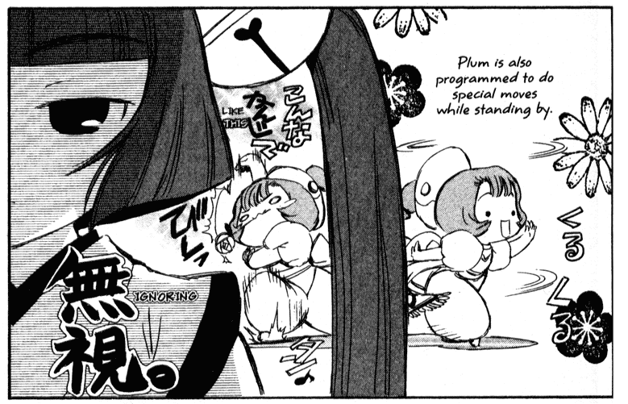
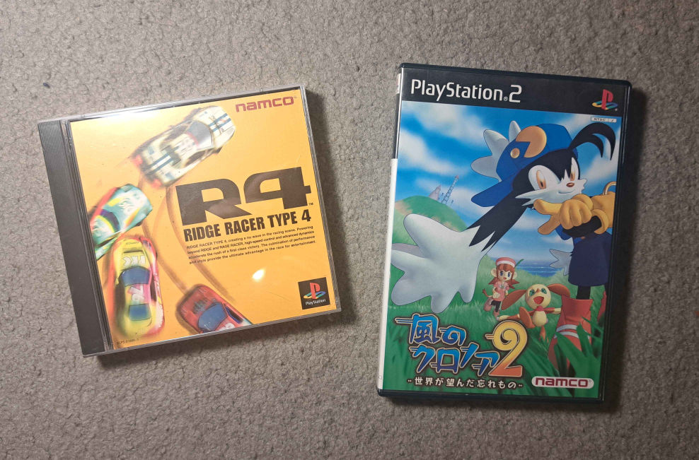

Been watching a lot of cartoons and painting and waiting on an employer to get back to me. (Drawn so much Transformers gijinka...) I built my Zaku II!! She's adorable!! And I finally have a bookshelf in my bedroom.
I completed the Picross Touch base puzzles and my Super Mario Wonder save. I had a good time with it but I feel the timer removes some needed tension. It's really forgiving with the exception of some of the special stages (jump to the beat and final-final for me). I also love the Poplins being a daring counterpart to the Toads, to the point that it compromises their safety, such as with the Poplin miners. Prince Florian doesn't express much fear either. Are they all crazy people accustomed to wonder effects? Yeah... I can see it in their wide, hollow eyes. Now I'm playing Antonblast and Left 4 Dead 2 with friends.
Last, look at Tip's drawing of my Zaku gi
Attended the DotD reception and picked up pizza and breadsticks afterwards. I'm an awkward conversation partner but it gets severe when my family's around... which is almost all the time, so I must come off like I have problems to others. And they'd be right. But I got to catch up with one of my cohorts whose screenprint was awarded 1st place! She's very sweet.
Trying to finish rereading Chobits. My beloved and aesthetically pleasing slop. Yumi's complex regarding AI robot waifus is oddly relevant with the popularity of chatbots. Something about the confirmation biases they encourage doesn't sit right with me, but that's off topic.

Been home most of this week so I've been left to my own thoughts too often. Feeling unaccomplished and pathetic even if those aren't true. Doesn't help that I didn't land an ideal job I actually got an interview for. I am, at the very least, not one to give up. Just need sense knocked into me sometimes.
For some good news, my painting won an honorable mention at the DotD show :) Makes me optimistic about the perception of my bishoujo-aligned stuff. There's been this nagging voice at the back of my head telling me to sell prints and postcards, but I'm holding off on it for now.
And yesterday my brother and I went to a thrift's reopening event. Talked to one of my cohorts there, played some MK Double Dash, found a Wheeljack figure.
Tip got me the HGUC Zaku I wanted so I need to rethink my first paycheck purchase.
Finished a painting on time for a Day of the Dead show and dropped it off! Unfortunately my documentation photos were washed out on the sides so I'll have to get better ones once it's hung and evenly lit, if it's accepted.
It features Leche, who I haven't painted in a year. First time painting her on canvas. Took around 15 hours? I've come a long way from 2022's "I'm in a Gallery..."
Went to an empty morning showing for Transformers ONE. It was AWESOME and visuals/sound were mindblowing! All the cameos and stuff were cool but never detracted from the small core cast, usually a common fanservice problem.
While straightening out my room, I found a pad of unused YUPO paper. Definitely using it for the group show somehow.
TF "Five Faces of Darkness" was so bad it made me shit twice.
Visited Lodi Comic Con. Hot, a lot of capeshit and Funkos, and I missed one of the exhibitor halls, but the artist alley had a surprising array of indie comics. I picked up three... vendors were all sweet souls, and I heard about CrockerCon through one.
Of all things, though, the preview version of Eye Lie Popeye shapes up into something interesting.
The Transformers Movie (1986) is a shitkino seizure simulator. Megatron can't handle a day of what Starscream did for like 5 million years.
So the other day a Marketplace user in my area listed of a bunch of Japanese PS games, Klonoa 2 among them, for very cheap. Finally, an old game I wouldn't talk myself out of. Met up with him, got to chatting, mentioned I liked the Ridge Racer series, and he remarked he had "the yellow one..." imagine my excitement! IT PAYS TO KNOW YOUR SHIT!!! REALLY!!!!
He also had a 'broken' JP PS2 that would boot but not display video. Could be the GPU, rusted video ports, something dumb like a battery, but my dad talked me out of it and there was no guarantee I'd find the issue. The warranty seal wasn't even cut. So pure. I hope he finds a working console.

Also played Super Kirby Clash with my mates and forgot how much I enjoyed it, even with the godawful grind.
Started applying for jobs this weekend. I made the mistake of mentioning an open front desk position at my dad's old workplace because he begged me on his knees to apply there. It pays well and includes benefits unlike the position I'm more interested in, but we'll see what happens. I've decided my first paycheck will go towards a Zaku II HGUC and panel liner to make her extra pretty. (Fuccckkk I regret not getting that cute HG GM I saw at the con for $10)
I've since painted my Mario and Zaku keshi, but I'll save them for a writeup after my Galasynth post around the 27th. Writing about art keeps me sharp. Probably.
Last, I played Splatoon 2 with my friend last night and it's boneless compared to 3. It has weapon variety, Octo Expansion, Shifty Stations and good ink colors, but IDK, Splatoon 3 does almost anything else better. I was overreacting as we played but the strategic differences really were night and day!
Took the train to SacAnime on Friday, went to Wheatland on Sunday, and made steak and rice and played Croc with my brother last night. My dad's been playing Crash 3 again too. It's fun watching him game because he puts his body into it on default, swerving around and yelling like he's in 5PM traffic.
August was quite long, but quite fun! My goals this month are to get onto art commissions and get more on the GKB portal page. I'm now verified thru VGen, so the former will be easy to start up. Oh and maybe those 3d print keshi. They're dying to be painted. Aaaaand a small proposal for my group exhibition ha ha ha.
Beat Kirby's Adventure a few days ago and am halfway through Extra Mode now. But no matter the mode, one fuckup causes a domino effect of shit. I last played NiDL five years ago and it didn't feel nearly that rough... nor was it as strong visually. Random unintegrated floating platforms, anyone???
Random plug for https://www.instagram.com/yanoyano77. Peace-loving Gunpla on outdoor adventures.
Been to two concerts this week and am heading to a third tonight. I think I have another two coming up, including Everclear, which I'm excited for; they put on a fine show, and they'll be at August Hall again. If you don't mind standing, the balcony view there is spectacular. Attracts a younger crowd too. I attend a lot of boomer rock shows with my dad so the audiences are usually picky and grumpy.
Had a director's cut watch party for [https://youtube.com/playlist?list=PLolqgpvKyGEa3UK0IXZV7q5tRuM6uE8i8&si=lKvqADSmG-ut3Q7H](Sonic: The Forgotten Files) last night. Plugging because it's super well-researched and his kitbashed editing style makes good use of that research.
Took the bus like I said I would earlier this week and checked out the hobby store, game and cards store, and its neighboring market and liquidation store. My face dropped when I saw Klonoa Moonlight Museum for $160... fortunately I already emulated it! But the staff was cool, interesting stock, so I'll be back around there. Also got some precision brushes from the hobby store for my 3d print keshi and whatever else.
As much as I love the thrill of the hunt for old games and related items, I don't feel I have much use for them right now. It's a mix of factors: general paranoia about wasting money, impracticality as I already emulate many titles, and not having a console I would prefer to play a game on (ADVANCE SP). On the other hand I buy new games physically and am fine with cheap Steam/Itch purchases, especially when they benefit indies. Old game purchases are reserved for sentimental value or cases inexpensive enough to justify playing on a console. I guess my approach is... if my ownership isn't at the mercy of someone else, I don't mind playing it this or that way.
Trying not to be gloomy, was looking forward to the flea market and shopping with my dad but plans fell through. Probably gonna take the bus in the morning because being in my room all day is also contributing to my misery. I started listing items on eBay a few days ago to keep busy.
On the bright side, I was accepted into a group exhibition for Feb-Mar 2025! They offer a stipend for materials and want to encourage production of new works for the show. Writing a new project proposal and preparing for the eventual artist talk will be fun(?).
It's been a couple of days since I returned from Canada. It was hard on me, and I have scratches below my eyes from wiping them so much. But what an amazing vacation with my favorite person! I wouldn't trade it for the world.
Nothing's changed at home, but I've a lot of short and long-term plans lined up and am ready to take them on. Job hunting, getting a driver's license, setting up art commissions (thru VGen or Artistree), selling old items, finding the right bookshelf for my room, upcoming artworks and hobby sculptures, painting the front and backyard doors...
Streamed painting Little Caesars Shiver for about 3 hours last night. Was great to hear my friends' voices again.
Spent the last two nights collecting stamps to add here since I used to have a long wall of them on my dA page. Found new book and shirt-dress at Value Village, had lunch with Tip and her family near the Prim Point lighthouse (incredible view and pasta!), stopped at some beaches. I figured instead of buying more souvenirs, I could make some inexpensive ones for my folks... so I gathered sand/shells from two coasts and filled little mason jars with them. They're going to make my backpack noticeably heavier lol.
Oh, and Cows ice cream. That's the big tourist thing here. Had a scoop of Moo York Cheesecake on a chocolate-dipped waffle cone. Not sure if it's the best ice cream I've had but surprisingly cheesy and high quality. The cone was so soft...
Lots of amazing food today, lots of fun!! A delicious breakfast bokit from Datcha, then atlantic salmon bagels, lobster roll, and hamburger grilled by Tip's dad. Failed to kayak on rough waters because I'm a n00b, but taking a walk through the warm water exfoliated my legs. Watched the Paris Olympics opening ceremony. Loved the music choices and performances, but what a drag.
Finished ChäoS;HEAd with Tip, and it was so ass. The "chaos head is a masterpiece" vid on YouTube is just one of those summary "essays" so we can say we played the game too. I enjoy the original game's UI and high-quality presentation though.
Began another PEI painting at the park but packed up early due to the cold breeze. Sbubby for dinner. Read some of Novas Aventuras de Megaman which, for some odd reason, was translated into English... not that it answered any questions I had about it when I was 14.
Today's new treat was an Avalanche Beavertail: cheesecake icing, caramel syrup, and SKOR™ on a Beavertail, which is like an elongated funnelcake. Airy and sweet, though the SKOR™ bits were overpowered by the other condiments. One $8.95 tail easily serves two.
Listened to Asakusa Light while doodling Pokemon stuff. I've been sitting on a painting of a defeated Pecha and Tera for two weeks ha.
Had a Maritime Meat Handpie today. Tip had the Bacon Cheeseburger type. Stuffed to the edges with meat and worth the $10. It's a large Canadian empanada.
Been thinking about my AI/human sister characters Abiu and Cai on and off. I haven't drawn them in a few weeks. Trying to figure out how AI works/is responded to in their world
With Tip's guidance, I assembled my first GunPla, SD Gundam EX-STANDARD GAT-X105+AQM/E-X01 Aile Strike Gundam. His real name is Mathieu. His red pieces were sprayed with a metallic red and semi-gloss topcoat.
Back...